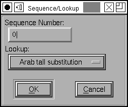
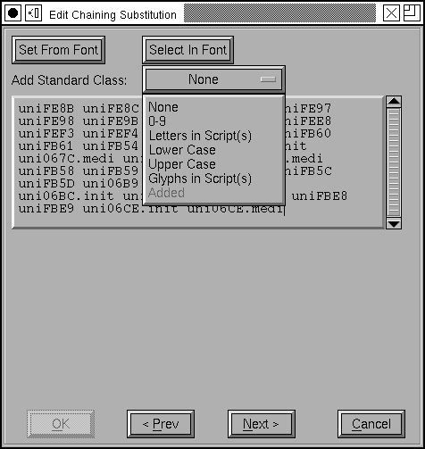

文脈依存または文脈連鎖依存機能の編集のしかた
文脈依存位置指定機能とは何か?
文脈に依存する位置指定モードには 2 つのタイプがあります: 文脈依存の位置指定と文脈連鎖依存の位置指定です。前者の最も単純な形では、グリフのリストを指定して、その並びにマッチしたときに再配置が行われます。例えば、(英語で) 以下の文字列
5 t h
を指定して、この並びが見つかったら“t”と“h”を持ち上げて 5th と表示するような指定を行うことができます。
また、グリフのクラスを指定することができるので、以下のような指定ができます:
[0-9] t h
これにより、任意の数字の後にある“t”と“h”の並びを持ち上げることができます。
この照合を適用した後、ワードプロセッサはパターンに一致した 3 個のグリフを飛ばして処理を行います。少なくとも単純な「文脈依存の位置指定」の照合ではそうです。「文脈連鎖依存の位置指定」における照合では、それより少し一般性が高く、パターンを 3 つの部分に分割することが可能です: 現在のグリフ以前に出てくる部分 (バックトラックと呼びます)、現在のグリフを含む部分および現在のグリフより後側の部分 (前方参照と呼びます )です。位置の変更は現在のグリフを含む部分のみに適用することができ、それを行ってから、ワードプロセッサはそのパターンのサブセットに含まれるグリフの個数だけ前方に進みます。
文脈依存の置換機能とは何か?
置換には 3 つのタイプがあります。最初の 2 つは、2 つのタイプの 位置指定と類似していますが、3 番目はアラビア語のタイポグラフィにおける非常に特殊なケースを扱うために設計されたもので、逆向きに適用されます。
ほとんどの文字はベースラインで接続しているが、一部の文字 (b,o,v,w) の後では x ハイトのあたりで接続している筆記体フォントを考えてみましょう。一部の文字のために、各小文字には x ハイトの高さに脈絡をもつ特殊なバージョンを作成する必要があります。以下のような指定ができたら便利に違いありません:
[bovw] [a-z]
これは置換が適用可能な場合のみに適用されることに注意してください。これは置換そのものを指定するのではなく、独立した照合によって処理されます。
この置換をもつ筆記体フォントの例を、FormalScript.tgz からダウンロードでき、この例はチュートリアルで詳しく実演しています。
より完全な説明
文脈依存の機能に関するより詳しい情報については、Adobe の文書を参照してください:
これらは Apple 高度組版機能とどう関係しているのか?
いくつかの場合、文脈依存または文脈依存連鎖の置換を Apple の文脈依存グリフ置換サブテーブルに変換することが可能です。いつそれが可能で、どう行うべきかの注意点についてのより詳しい情報は、Apple 高度組版機能のページを参照してください。
文脈依存機能の作成
これらの機能を編集可能にするには、まずエレメント(L)→フォント情報(F)...→[文脈依存] ダイアログで、機能を作成しなければなりません。
機能の編集
 フォーマット
フォーマット
前方文脈連鎖依存の機能を除き、これらはすべて次の 3 つのフォーマットのどれかで表されます。
最も単純な形はグリフのリストです。1 個の機能で何種類かのグリフの列を指定することが可能です。上に示した筆記体の例は、(非常に非効率ですが) 以下のような 4×26 行のテキストで表現可能です:
b a
b b
...
o a
...
2 番目のフォーマットでは、クラス のリストを指定可能です。筆記体の例の場合、2 個のクラス定義
[bovw]
[ac-np-ux-z]
ならびに、2 個のパターン定義を作成することになります:
class1 [class2]
class1 [class1]
3 番目のフォーマットは最も汎用的で、パターンを各グリフの位置ごとに異なるグリフのリストによって指定することができます:
[bovw] [a-z]
 範囲
範囲
この表示画面は、範囲テーブル (これはグリフのリストです) を項目として含むリストを表示します。照合が成功するのは、現在のグリフが、現在の範囲テーブル内で命名されたグリフのどれかと一致するときです。
右の例では範囲テーブルは 1 個しか含まれていません (が、増やすことは可能です)。
文脈連鎖依存の機能では、現在のグリフの前に一致する範囲テーブルのリストを指定することができ、さらに、後ろに一致する範囲テーブルのリストを別に指定することもできます。
範囲リストの下にあるボタンを使って、新たな範囲テーブルをリストの最後に追加 (これにより、一致文字列の最後に追加されます) したり、現在の範囲テーブルの編集、範囲テーブルの削除または範囲テーブルの並べ替えが可能です。
この機能は、変換がどのようにグリフに対して行われるかを直接記述するものではなく、一致文字列内の特定の位置だけに適用されるような入れ子の機能 (実際には照合ですが、これらの区別をつけずに済むようにしているつもりです) のリストを提供します (バックトラックリストおよび前方参照リストには変換不可能です)。
右の例では、機能‘L041’はリストのいちばん上にある範囲指定テーブルに一致する任意のグリフに適用されます。ここでもグリフ列照合リストの下にあるボタンを使ってそれらの変換指定を追加・編集・変更または並べ替えることができます (そして、複雑な状況下では、変換が適用される順番が大きな問題となることに注意が必要です)。
 列照合ペアの作成または編集
このダイアログによって、一致文字列内のどの文字列をどの入れ子になった機能で処理するかを指定することができます。
入れ子になった機能は通常の機能と非常によく似ています (位置指定・ペア・置換・合字・アンカーなど) が、スクリプト/言語のリストではなく“Nested”という特殊な値が与えられている点が異なります。
 範囲テーブルの設定方法
上記の範囲テーブルダイアログで [新規(N)] または [編集(E)] を押すと、右に示すページに進みます。テキストフィールドには、範囲指定テーブル内の全てのグリフの名前が表示されています。そこに直接文字を打ち込んでリストを編集することもできますし、または [設定] ボタンを押すと、フォントビュー内でそのとき選択されている全てのグリフの名前がテキストフィールドに設定されます。また、[選択] ボタンを押すとフォントビュー内の選択文字が現在のテキストフィールドの内容に合わせて変更されます。
これらの操作を取り消したい場合、[< 前(P)] ボタンを押すと範囲リストページに戻ります (ここで行った変更は全て破棄されます)。一方 [次(N) >] ボタンを押すと、これらの変更が確定します。
 グリフ
グリフ
このフォーマットを使うと、一致の対象となるいくつかのグリフリストを指定することが可能です。右の例では現在のグリフの前にあるグリフを文字列“A,B,C”と照合し、続いて現在位置から始まる文字列と“D E”との照合を行い、最後にその後ろの部分と“F G H”との照合を行います。もしこれら全部と一致した場合、機能‘beef’が位置 0 (この場合“D”) に適用され、機能‘dead’が位置 1 (この場合“E”) に適用されます。
下に並んだボタンを使ってこれらの項目の追加・編集・削除および並べ替えが可能です。順序は重要です。ワードプロセッサは、最初に一致した項目で停止するので、以下の例
b a
b a f
では、“b a”が最初に適用されてしまうため、2 番目の項目に一致することは決してありません。
b a f
b a
とすれば、“f”が存在するときには“b a f”に一致し、存在しない場合には“b a”に一致するでしょう。
 グリフの選択法
グリフの選択法
テキストフィールドは上に記した方法で操作することができます。しかしながら、そこでやってきたのは、各要素が一致しなければならないグリフの列を指定する方法であり、どれか 1 つが一致すればよいグリフのクラスを指定する方法ではありませんでした。ですから右の例では“DE”は一致しますが、“E”は一致しません。
上に示したように、一致が起こった後でいくつか組になった照合を適用することは可能です。
 クラス
クラス
クラスの一致を指定するとき、最低でも 1 個のグリフクラスのセットを指定する必要があります。(バックトラックと前方参照のリストで独立したクラスのセットを指定する個ともできますし、あらゆる場面で同じセットを使用することも可能です)。もう一つ指定しなければならないリストがあります。そのリスト内の各パターンは数値のリストであり、それらの各数値はクラスリスト内でのクラスのインデックスを意味します。
各クラスセットのインデックス 0 には、その他のどのクラスでも明示的に指定されていないすべてのグリフに一致するマジッククラスが置かれています。FontForge は、これを“{その他すべて}”と呼んで表示します。このクラスは削除も編集や並べ替えもできません。その他のクラスはグリフ名からなる順不同のリストです (上の範囲テーブルとは異なります) が、どのグリフもたかだか 1 個のクラスにしか同時に所属することができません (範囲テーブルには何度でも出現することができるのと異なります)。
 クラス番号のリスト
クラス番号のリスト
クラスの設定が済んだら、一致させたいパターンを編集することができます。どのようなクラスを作成したか忘れないように、FontForge はパターンの下にクラスリストを表示します。クラスをクリックすると、そのクラスのインデックスがパターン内に挿入されます。
最後に、入れ子になった参照を設定する必要があります。この手順は前に行った列/照合の設定とまったく同じです。